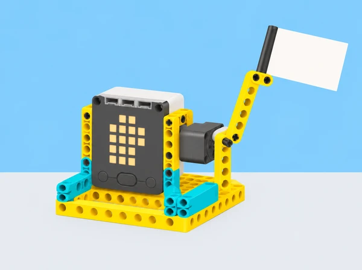

La biblioteca del centre rep classes convidades i vol un senyal visual d’acollida que es puga entendre de lluny i que no exigisca cap contacte físic. Cada equip dissenya un mecanisme SPIKE Prime amb un moviment de benvinguda: una salutació, una inclinació o una bandera que s’alça i torna a la posició inicial. El robot és una maqueta de comunicació: no substitueix la salutació de les persones ni decideix qui pot entrar.
El repte combina expressió visual, moviment i programació. La pregunta central és com les decisions sobre la forma, l’amplitud i el ritme canvien la lectura del gest. Partim d’un espai pròxim —la biblioteca escolar— i pensem també com es podria rebre un grup visitant d’un altre centre de la localitat. No gravem ni identifiquem visitants: les proves es fan amb targetes o amb persones voluntàries que poden observar des de la distància i retirar-se quan vulguen.
Abans del muntatge, cada equip defineix com comprovarà aquests criteris: el gest es reconeix a distància; el moviment no resulta brusc ni envaeix l’espai personal; torna de manera repetible a una posició segura; i hi ha una alternativa si no es vol activar el sensor o participar en la prova.
Observeu tres targetes amb gestos dibuixats —braç que saluda, bandera que s’alça i inclinació breu— i descriviu què veieu sense endevinar intencions. En grups, esbosseu tres propostes i anoteu per a cadascuna: què es mou, qui inicia el moviment, des de quina distància es veu i com acaba. Compareu una forma amable i recognoscible amb una de més abstracta; no cal afegir una cara o ulls al muntatge perquè el moviment comunique.
Trieu un gest que es puga representar amb un motor i una peça lleugera. Marqueu en el dibuix la base, l’eix, la part mòbil i el recorregut màxim. El criteri d’accessibilitat comença ací: el senyal ha de ser visible sense so, i una targeta fixa de benvinguda ha de continuar disponible. Evidència: tres esbossos, anotacions de lectura i selecció argumentada. Suport: oferiu una plantilla amb les parts «base / motor / element mòbil / espai segur»; ampliació: dissenyeu dos gestos diferents amb una mateixa peça terminal.
Construïu una base ferma amb un motor SPIKE Prime i un braç o bandera de cartó lleuger subjecte amb peces del kit. Comenceu amb l’articulació més simple. Desplaceu el motor o canvieu la posició de l’eix per observar com varia l’arc del braç; dibuixeu l’eix de rotació i mesureu l’amplitud aproximada en una graella de paper. Afegiu una «mà» geomètrica o una peça terminal només si ajuda a llegir el gest, sense fer-la massa pesada.
Compareu una extensió curta amb una llarga: observeu recorregut, oscil·lació de la base i estabilitat en començar i parar. Com a ampliació inspirada en el brief, uniu peces en X per construir una extensió de tisora. Mesureu l’abast en repòs i desplegada i decidiu si realment millora la visibilitat del senyal. Evidència: muntatge anotat, esquema de l’eix i una comparació de dues formes. Alternativa: si la tisora és inestable o el temps és limitat, conserveu-la com a model de paper i completeu el gest bàsic amb un braç directe.
Escriviu primer una seqüència curta: posició inicial, moviment fins a una amplitud acordada, pausa breu i retorn. Programeu-la en blocs; si el grup té experiència prèvia, representeu la mateixa seqüència en Python. Creeu dues versions: una basada en temps i una altra en rotacions del motor. Manteniu constants la forma i la velocitat mentre compareu-les. Executeu cada versió tres vegades i registreu si l’element arriba al punt previst i si torna al repòs sense colpejar el suport.
Si el braç no retorna o es mou massa, feu una prova de depuració canviant una sola cosa: valor de rotació, durada o orientació inicial del motor. Eviteu accelerar el moviment com a primera solució. Evidència: pseudocodi, captura o diagrama del programa i taula de tres execucions. Repte d’ampliació: programeu dos moviments consecutius amb una pausa clara i expliqueu quin es podria perdre si es redueix massa el temps entre ells.
La proposta oficial planteja un sensor ultrasònic per fer que el moviment s’active quan hi ha algú al davant. Adapteu-ho sense apuntar a persones: useu una targeta gran o un objecte de cartó que es col·loca davant del sensor de distància SPIKE. Definiu una distància d’activació i una altra de separació, feu proves des de tres punts marcats i observeu si el gest s’activa una vegada o repetidament mentre l’objecte roman allí. Ajusteu el valor només després d’escriure què espereu que canvie.
Feu una llista de possibles errors: objecte massa menut, angle diferent, obstacle del fons o distància fora del rang provat. Si el sensor no forma part del set o no està disponible, useu el botó del hub o un inici manual. Aquesta alternativa no és menys vàlida: permet comparar una entrada automatitzada amb una d’explícita i conserva el control de la persona. Evidència: diagrama d’entrada/resposta, taula de distàncies i una nota sobre falses activacions. Cap sensor identifica una persona ni determina si vol interactuar.
Prepareu una demostració en una taula estable. Una parella que no ha construït el model veu el gest des d’un punt marcat i tria una targeta de retorn: «he entés el senyal», «el moviment m’ha sorprés» o «preferisc el senyal estàtic». No es pregunta a ningú si el robot li sembla personalment acollidor, ni es grava la resposta. El grup constructor usa el retorn per a canviar una sola característica —amplitud, posició del motor, durada o forma terminal— i torna a provar-lo.
Presenteu el prototip amb un cartell que mostre el gest triat, el programa resumit i una limitació. Acabeu comparant el muntatge directe amb el braç de tisora, si s’ha construït, i expliqueu quina versió és més estable i més clara. Evidència: prototip revisat, feedback anònim no identificable, canvi documentat i explicació oral o escrita.
Set LEGO Education SPIKE Prime 45678 per parella o equip, hub carregat, un motor, peces estructurals, cartó lleuger per a bandera o mà, paper quadriculat, retoladors, regle i targetes de feedback. Sensor de distància opcional, només si forma part de la dotació i funciona en la versió local de l’app; si no, el botó del hub és suficient. No cal una expansió ni cap objecte addicional que interactue amb el cos.
Abans de la classe, proveu el port i l’orientació del motor, prepareu una base estable i marqueu una zona de moviment segura. Deixeu targetes de gest disponibles per a anticipar la seqüència i un mode manual perquè el prototip no depenga del sensor. Roten els rols de disseny, muntatge, programació, registre i observació; cada alumne pot aportar una prova encara que no vulga activar ni veure el gest en directe.
Recolliu esbossos i criteris, diagrama mecànic, codi o pseudocodi, comparació temps/rotacions, registre de proves del sensor (si s’usa), retorn d’ús i revisió final. La rúbrica formativa observa:
Autoavaluació: «El gest es llig des de…», «he triat temps/rotacions perquè…» i «una alternativa que continua disponible és…». El feedback es refereix al disseny i a la llegibilitat, mai a la personalitat o a les emocions de qui observa.
Oferiu instruccions escrites i visuals, demostració lenta i opció d’anticipar els moviments amb targetes. El missatge ha de combinar moviment amb un senyal estàtic visible; el so no és necessari. Les persones poden observar des de la distància que trien, participar a través del registre o no acostar-se al mecanisme. No useu el sensor per detectar o seguir visitants i no associeu cap moviment amb l’estat d’ànim de les persones.
Proveu el braç a baixa velocitat, sobre una superfície estable i sense ningú dins del seu recorregut. Atureu i desconnecteu el hub abans d’ajustar l’eix o retirar peces. El prototip no és un sistema de control d’accés ni un dispositiu per a espais públics; la recepció real continua sent responsabilitat de les persones del centre.
Partim del SPIKE Activity Brief: Greetings, Earthling, elaborat amb el Tufts Center for Engineering Education and Outreach. El brief proposa saludar amb una salutació de mà, un puny o un xoc de mans; pensar com fer un aspecte amable, on situar el motor perquè el braç es moga amb naturalitat, i controlar la quantitat de moviment amb temps o rotacions. També suggereix afegir una mà, activar-se amb sensor ultrasònic i allargar el braç amb una tisora de peces en X. Aquesta adaptació conserva eixos i extensions, però representa el gest a distància per no requerir contacte corporal. La narrativa de biblioteca, seqüència, proves, criteris i il·lustració són propis; el sensor s’assaaja només amb objectes.